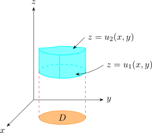
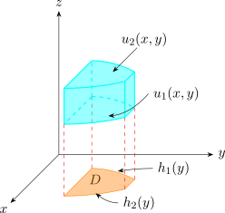
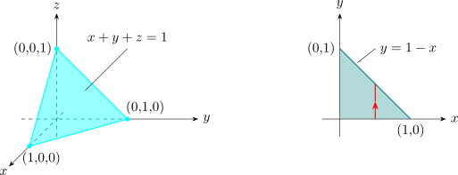
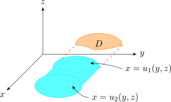
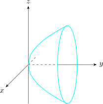
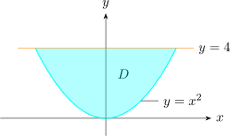
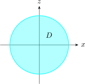

3.9 Triple Integrals Over A General Bounded Region \(E\)
We enclose \(E\) in a box \(B\) and define \(F\) so that it agrees with \(f\) on \(E\) and is 0 for all points in \(B\) outside \(E\) \[\iiint \limits _E f(x,y,z)\hspace {0.1cm} dV = \iiint \limits _B F(x,y,z)\hspace {0.1cm}dV\]
A solid region \(E\) is said to be of type I if lies between the graphs of two continuous functions of \(x\) and \(y\) i.e \[E = \big \{ (x,y,z)\hspace {0.1cm}\big | \hspace {0.1cm} (x,y) \in D,\hspace {0.1cm} u_1(x,y) \leq z \leq u_2(x,y)\big \}\] where \(D\) is the projection of \(E\) on the \(xy-\) plane.

Type \(I\) Region
\[\iiint \limits _E f(x,y,z)\hspace {0.1cm}dV = \iint \Bigg [ \int ^{u_2(x,y)}_{u_1(x,y)} f(x,y,z)\hspace {0.1cm}dz\Bigg ] \hspace {0.1cm} dA\] If the projection of \(E\) on the \(xy-\)plane is a type I region.
\[E = \big \{(x,y,z)\hspace {0.1cm} \big | \hspace {0.1cm} a\leq x \leq b\hspace {0.1cm}, \hspace {0.1cm} g_1(x)\leq y\leq g_2(x)\hspace {0.1cm} , \hspace {0.1cm} u_1(x,y)\leq z\leq u_2(x,y)\big \}\] then \[\iiint \limits _E f(x,y,z)\hspace {0.1cm}dV = \int ^b_a \int ^{g_2(x)}_{g_1(x)} \int ^{u_2(x,y)}_{u_1(x,y)} f(x,y,z)\hspace {0.1cm}dz\hspace {0.1cm}dy\hspace {0.1cm}dx\]

type I Solid
If on the other hand, \(D\) is a type II \[E = \big \{(x,y,z)\hspace {0.1cm} \big | \hspace {0.1cm} c\leq y \leq d\hspace {0.1cm} , \hspace {0.1cm} h_1(y)\leq x \leq h_2(y)\hspace {0.1cm} , \hspace {0.1cm} u_1(x,y) \leq z \leq u_2(x,y) \big \}\]
then \[\iiint \limits _E f(x,y,z)\hspace {0.1cm}dV = \int ^d_c \int ^{h_2(x)}_{h_1(x)} \int ^{u_2(x,y)}_{u_1(x,y)} f(x,y,z)\hspace {0.1cm}dz\hspace {0.1cm}dx\hspace {0.1cm}dy\]
Evaluate \(\displaystyle {\iiint z \hspace {0.1cm} dV},\) where \(E\) is the tetrahedron bounded \(z = 0\hspace {0.1cm} ,\hspace {0.1cm} y = 0\hspace {0.1cm} , \hspace {0.1cm} x = 0\) and the plane \(x + y + z = 1\)

\begin {align*} \iiint \limits _E z\hspace {0.1cm}dV & = \int ^1_0 \int _0^{1-x}\int ^{1-x-y}_0 z \hspace {0.1cm}dz \hspace {0.1cm}dy\hspace {0.1cm} dx\\ & = \frac {1}{2} \int ^1_0 \int _0^{1-x}\big (1 - x- y\big )^2 \hspace {0.1cm}dy \hspace {0.1cm}dx\\\\ & = \frac {1}{24}\\ \end {align*}
A solid region \(E\) is of type 2 if it is of the form \[E = \big \{ (x,y,z)\hspace {0.1cm} \big | \hspace {0.1cm} (y,z)\in D\hspace {0.1cm}, \hspace {0.1cm} u_1(y,z) \leq x \leq u_2(y,z)\big \}\] and \(D\) is the projection of \(E\) on the \(yz\) plane, with surfaces \(\hspace {0.4cm} x = u_1(y,z)\hspace {0.2cm},\hspace {0.2cm} x = u_2(y,z)\).

\[\iiint \limits _E f(x,y,z)\hspace {0.1cm}dV = \iint \Bigg [ \int ^{u_2(y,z)}_{u_1(y,z)} f(x,y,z)\hspace {0.1cm}dx\Bigg ] \hspace {0.1cm} dA\]
A solid \(E\) is of type 3 if \[E = \big \{ (x,y,z)\hspace {0.1cm} \big | \hspace {0.1cm} (x,z)\in D\hspace {0.1cm}, \hspace {0.1cm} u_1(x,z) \leq x \leq u_2(x,z)\big \}\] then
\[\iiint \limits _E f(x,y,z)\hspace {0.1cm}dV = \iint \Bigg [ \int ^{u_2(x,z)}_{u_1(x,z)} f(x,y,z)\hspace {0.1cm}dy\Bigg ] \hspace {0.1cm} dA\]
Evaluate \(\displaystyle {\iiint \limits _E \sqrt {x^2 + z^2}\hspace {0.1cm}dV}\) where \(E\) is the region bounded by the paraboloid \( y = x^2 + z^2\) and the plane \(y =4\).
|  |  |
\(y = x^2 + z^2\implies z = \pm \sqrt {y - z^2}\)
\(E\) as type I region
\[E = \big \{ (x,y,z)\hspace {0.1cm} \big |\hspace {0.1cm} -2\leq x \leq 2 \hspace {0.1cm}, \hspace {0.1cm} x^2 \leq y \leq 4\hspace {0.1cm} , \hspace {0.1cm} -\sqrt {y - x^2} \leq z \leq \sqrt {y - z^2}\big \}\]
\[\iiint \sqrt {x^2 + z^2}\hspace {0.1cm}dV = \int ^2_{-2}\int ^4_{x^2}\int ^{\sqrt {y - x^2}}_{-\sqrt {y - x^2}}\sqrt {x^2 + z^2}\,dz\,dy\,dx\]
Alternatively, we take \(E\) as type 3 region.

\begin {align*} \iiint \sqrt {x^2 + z^2}\hspace {0.1cm}dV & = \iint \limits _{D_3} \Bigg [ \int ^4_{x^2 + z^2}\sqrt {x^2 + z^2}\hspace {0.1cm} dy\Bigg ]\hspace {0.1cm}dA\\\\ & = \iint \limits _{D_3}\big ( 4 -(x^2 + y^2)\big ) \hspace {0.1cm} \sqrt {x^2 + y^2}\hspace {0.1cm}dA\\ \end {align*}
Easier to convert to polar coordinates \(\hspace {0.3cm} x = r \cos \theta \hspace {0.5cm} z = r\sin \theta \)
\begin {align*} & = \int ^{2\pi }_0 \int ^2_0 (4-r^2)\hspace {0.1cm}(r)\hspace {0.1cm} \,r\,dr\,d\theta \\ & = \int ^{\pi }_0 d\theta \int ^2_0 \big (4r^2 - r^4\big )\, dr\\ & = 2\pi \cdot \Bigg (\frac {4r^3}{3}-\frac {r^5}{5}\Bigg |^2_0\\\\ & = \frac {128\pi }{15}\\\\ \end {align*}
Questions on this section
Stuck on something here? Ask below and it stays attached to this topic.